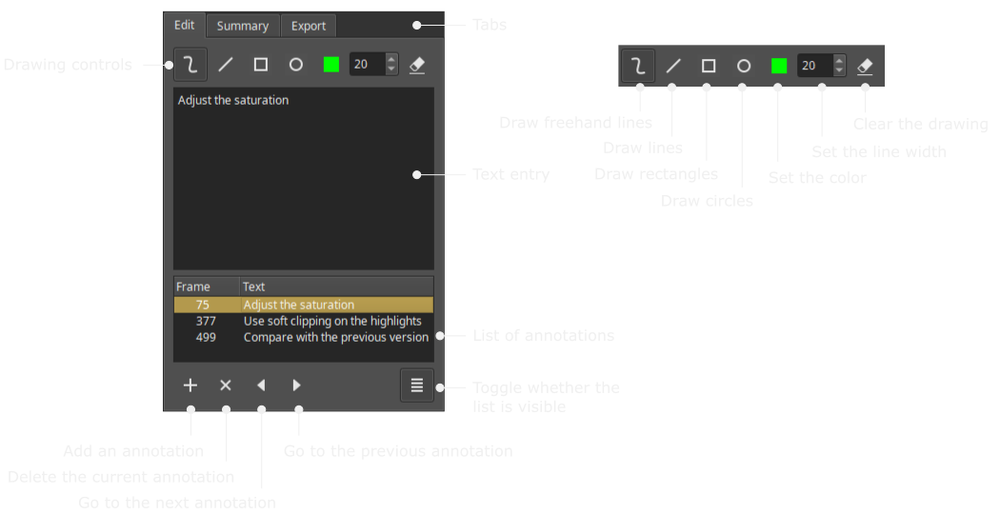

djv_view
Overview
djv_view is an application for viewing image sequences and movies.
Features include:
- Frame accurate playback controls
- Image and movie conversion
- Options to cache images in memory or stream them directly from disk
- Image magnification, color picking, histogram, and image meta-data display
- Annotations tool for reviewing renders and film footage
User Interface

Files
Image sequences and movie files may be opened from the "File" menu, by dragging and dropping them onto the image view, or by listing them on the command-line.
A memory cache stores images for fast playback performance, you can change the size in the preferences. You can also disable the cache if you want to stream images directly from disk.
If you don't mind sacrificing image quality you can speed up image loading and reduce memory consumption by using either "proxy scaling" or "8-bit conversion". Proxy scaling reduces the resolution of the images as they are loaded, 8-bit conversion reduces their bit-depth.
See also:
Playback Controls

Magnify Tool

Color Picker Tool

Histogram Tool

Information Tool

Annotations
The annotations feature allows you to make simple drawings and add text to frames for reviewing renders or film footage. These review notes can then be exported as JSON data for integration into your pipeline. An example script is provided to export the notes and images as a simple static HTML page.

The annotations panel can be shown from the "Annotate" menu, by clicking the "Show annotations" button on the tool bar, or using the keyboard shortcut "Ctrl+A". When the annotaions panel is visible you can draw on the current frame by clicking and dragging in the image view. You can add text to the frame by clicking the text entry box in the annotations panel and typing.
The annotations are saved automatically as JSON data in the same directory as the images. The annotations will also be loaded automatically when you open the same set of images again.
The annotations user interface:
Summary
Click on the "Summary" tab to write a summary of the annotations.

Exporting
Click on the "Export" tab to export the annotated images.

A default file name is automatically provided for the exported images so you can
generally just click the "Export" button to start the process.
You may optionally run a script after the images are exported which can be useful
for pipeline integrations. An example script is provided that creates a simple static
HTML page with the annotated images and text. The script can be found in the "scripts"
sub-directory where DJV is installed.
Example script and interpreter paths on Windows:
C:\Program Files\DJV\scripts\AnnotateExportToHTML.py
C:\Users\darby\AppData\Local\Programs\Python\Python37-32\python.exe
Command Line
Usage
djv_view [image]... [option]...
image One or more images, image sequences,
or movies
Options
-combine Combine multiple command line
arguments into a single sequence.
Files:
-file_layer (value) Set the input layer.
Default = 0. -file_proxy (value) Set the proxy scale: None,
1/2, 1/4, 1/8. -file_cache (value) Set whether the file cache is
enabled: False, True.
Windows:
-window_full_screen Set the window full
screen.
Playback:
-playback (value) Set the playback:
Reverse, Stop, Forward. -playback_frame (value) Set the playback frame. -playback_speed (value) Set the playback speed: 1, 3, 6,
12, 15, 16, 18, 23.976, 24, 25, 29.97, 30, 50, 59.94, 60, 120.
See also:
Click on the "Export" tab to export the annotated images.
A default file name is automatically provided for the exported images so you can generally just click the "Export" button to start the process.
You may optionally run a script after the images are exported which can be useful for pipeline integrations. An example script is provided that creates a simple static HTML page with the annotated images and text. The script can be found in the "scripts" sub-directory where DJV is installed.
Example script and interpreter paths on Windows:
C:\Program Files\DJV\scripts\AnnotateExportToHTML.py C:\Users\darby\AppData\Local\Programs\Python\Python37-32\python.exe
Command Line
Usage
djv_view [image]... [option]...
image One or more images, image sequences,
or movies
Options
-combine Combine multiple command line
arguments into a single sequence.
Files:
-file_layer (value) Set the input layer.
Default = 0. -file_proxy (value) Set the proxy scale: None,
1/2, 1/4, 1/8. -file_cache (value) Set whether the file cache is
enabled: False, True.
Windows:
-window_full_screen Set the window full
screen.
Playback:
-playback (value) Set the playback:
Reverse, Stop, Forward. -playback_frame (value) Set the playback frame. -playback_speed (value) Set the playback speed: 1, 3, 6,
12, 15, 16, 18, 23.976, 24, 25, 29.97, 30, 50, 59.94, 60, 120.
See also:
djv_view [image]... [option]...
| image | One or more images, image sequences, or movies |
| -combine | Combine multiple command line arguments into a single sequence. |
Files:
| -file_layer (value) | Set the input layer. Default = 0. |
| -file_proxy (value) | Set the proxy scale: None, 1/2, 1/4, 1/8. |
| -file_cache (value) | Set whether the file cache is enabled: False, True. |
Windows:
| -window_full_screen | Set the window full screen. |
Playback:
| -playback (value) | Set the playback: Reverse, Stop, Forward. |
| -playback_frame (value) | Set the playback frame. |
| -playback_speed (value) | Set the playback speed: 1, 3, 6, 12, 15, 16, 18, 23.976, 24, 25, 29.97, 30, 50, 59.94, 60, 120. |
See also: